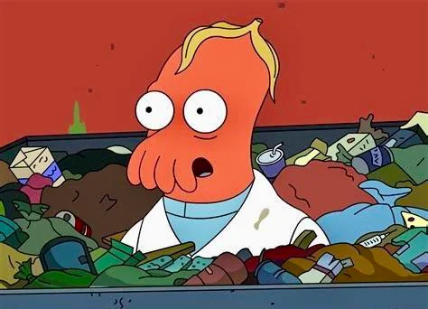
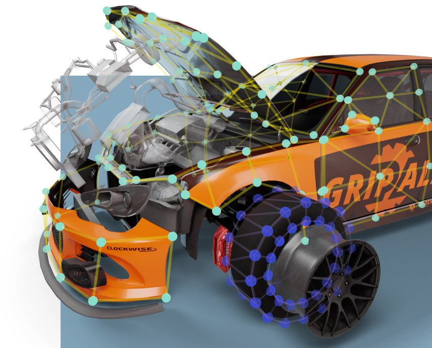
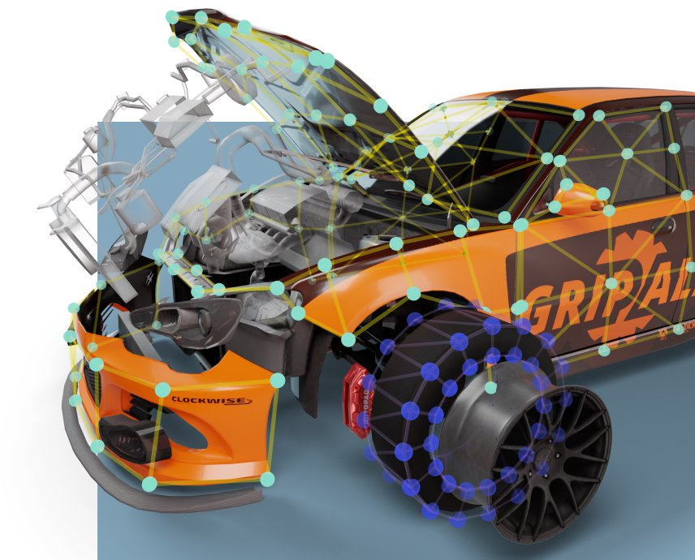

Good News Everyone!
I love Futurama! It's one of the wittiest cartoons I have ever seen and Zoidberg is possibly the funniest cartoon character to ever exist. I've watched it about 7 times over and I WILL nerd out about it constantly. I wear a red jacket every day, just like Fry, and I have a Slurm hat signed by Billy West, one of the voice actors in the show!
Music is Funky
I like to think my music taste is quite nice, although others may disagree. I listen to a lot of old-school rap and hip-hop, from the likes of Eminem, Dr. Dre, Biggie, Beastie Boys, and Run-DMC (just to name a few). I also write some stuff myself, but I haven't yet produced an actual song. My friend got me into some indie rock and it's very nice. It's easier to listen to than rap when studying or focusing because I don't listen to the words so much as to the nice music.

"What's the Matter Compressor?"
I LOVE LOVE LOVE computers and technology. My brain is very logic-oriented, so it's very easy for me to understand how things work with machines and code. I've made a few fun projects such as this website (self-referential :D), a handheld console that plays Pong, and a multimeter. More about these things can be found on my blog (if I get around to it lol)

Bleep Bloop Blap
Video games are a big part of my life. I absolutely adore retro games for their simplicity and the pure enjoyment I get from them. I also like car-racing games, Deep Rock Galactic, Minecraft, and Team Fortress 2. I'm a big fan of Valve and Steam and what they've done with gaming. I have a Steam Deck, a GBA SP, and an SNES, in addition to my PC.
 
